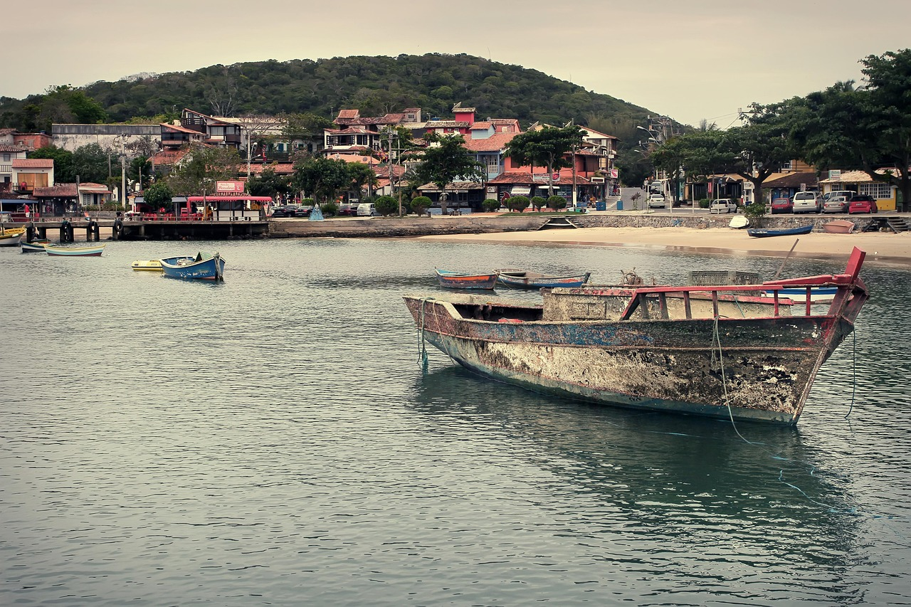
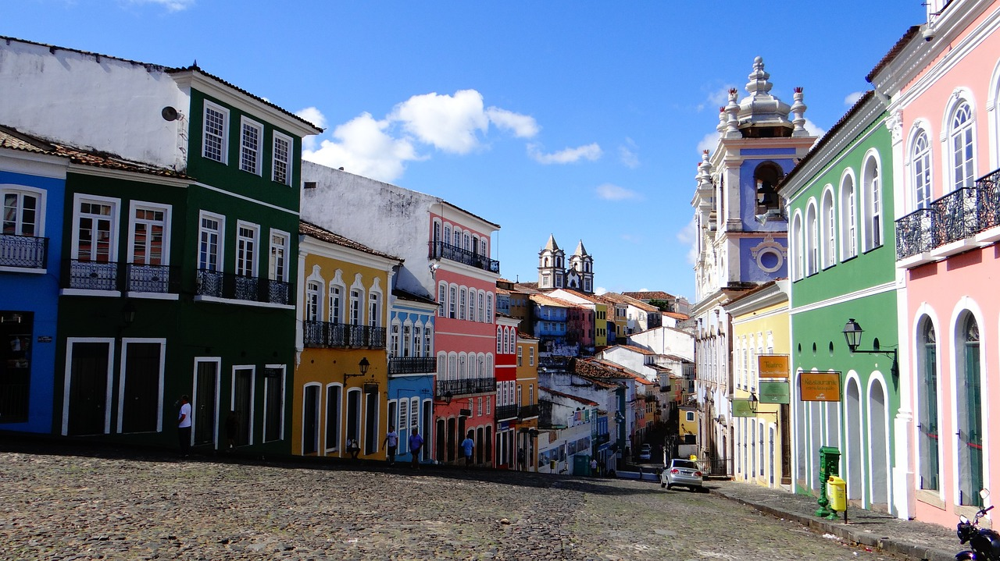

I'm planning to travel to Brazil this year with my mom. On this page, I'm going to write about the best places to visit there.
Rio De Janeiro

Rio de Janeiro is a must-visit destination for its stunning beaches, vibrant culture, and iconic landmarks like the Christ the Redeemer statue and Sugarloaf Mountain. It's a city full of energy, beautiful scenery, and unforgettable experiences.
Famous Tourist Spot:
Sugarloaf Mountain (Pão de Açúcar)A famous peak with a cable car ride that provides stunning views of Rio’s beaches and skyline.
Buzios
Búzios is a beautiful beach town located a few hours from Rio de Janeiro. Known for its charming streets, crystal-clear waters, and vibrant nightlife, it's a perfect place to relax and enjoy nature. The town has over 20 beaches, each with its own unique atmosphere.
Famous Tourist Spot:
Orla BardotOrla Bardot is a beautiful seaside promenade in Búzios, known for its ocean views and statues, including one of Brigitte Bardot.
Salvador
Salvador is a vibrant city known for its rich Afro-Brazilian culture, colorful colonial architecture, and lively music scene. It offers beautiful beaches, historic neighborhoods like Pelourinho, and a warm, welcoming atmosphere.
Famous Tourist Spot:
Elevador LacerdaA public elevator connecting the lower and upper parts of Salvador, offering spectacular views of the bay.